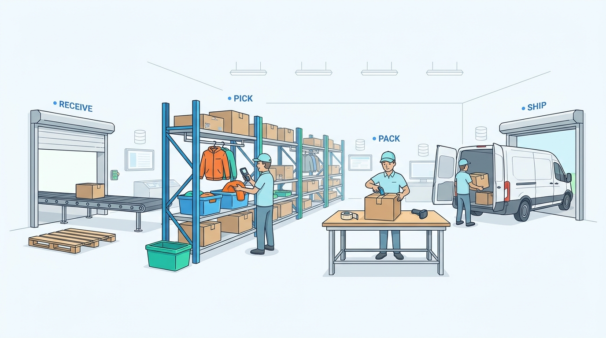

Part IV — FULFILLMENT: From Warehouse to Doorstep and Back
Pick, Pack, Ship: Warehouse Management and Fulfillment
AI-assisted: researched and written with Claude Code and Codex; illustrations generated with Gemini and OpenAI image tools. How this works
